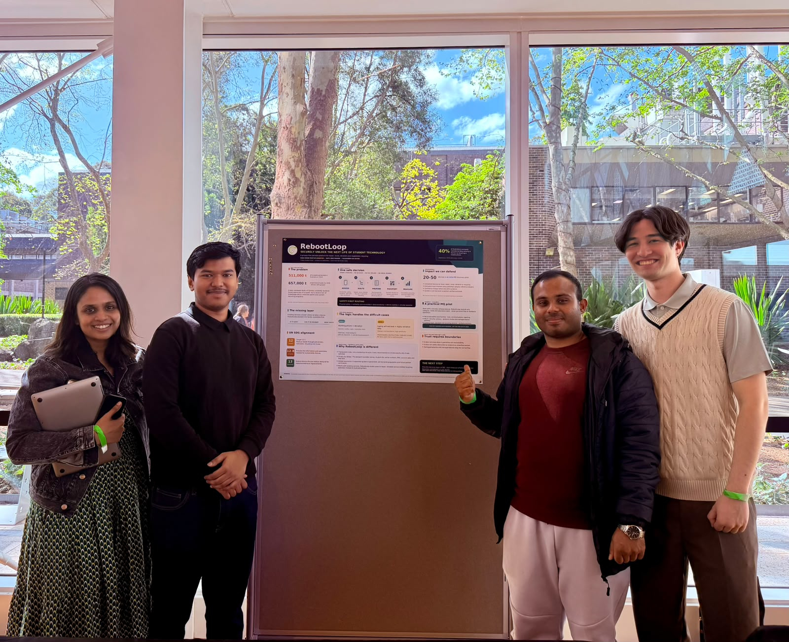
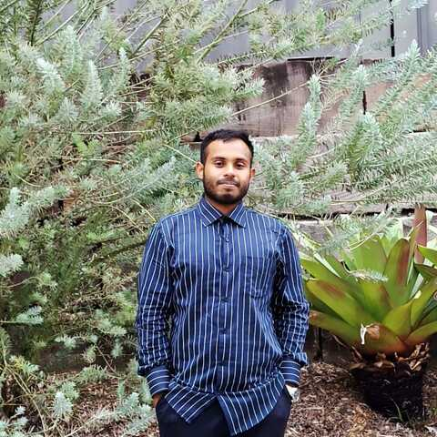

5th of 24 teams at Pitch for the Planet 2026 · Macquarie University
A safer next step for the old phone in your drawer.
Stop guessing. Make the right call on your old tech.
Repair it, pass it on or recycle it. Wiped first. Done in two minutes.

The problem
Old devices stay in drawers because of the data on them.
Students keep unused phones, laptops and storage devices not because they don't care about sustainability, but because they're unsure whether their personal data can still be recovered, and what to do next. That creates an e-waste problem and a cybersecurity barrier at the same time.
What it does
One clear route, with the safety stops built in.
Routes the device
Towards repair, passing it on or recycling, with explicit stops for hazards, devices you don't own, highly sensitive data and drives that need a specific process.
Guides the wipe
Links to the manufacturer's official preparation guide for your device, and a printable check for the next owner.
Points to a public service
MobileMuster for phones and the NTCRS for computers, with a reminder to check accepted items. No partnership is claimed.
Shows the difference
An estimated impact range for finishing the job, based on published manufacturer footprints. It is not a measured saving.
What it doesn't do: RebootLoop does not erase data, certify destruction, collect devices or guarantee that information is unrecoverable. It is a decision step before handover, not a replacement for existing schemes.
Who it's for
Built for students first.
Anyone with an old device
Find out what to do with a phone, laptop or drive in two minutes, without handing over personal details.
Try the demoUniversities and industry
See where the project is heading, who we've spoken to, and what a small, approved campus pilot would need.
For industryWho made it
Three Macquarie University students.
RebootLoop placed 5th of 24 teams at Pitch for the Planet 2026, and we're presenting this public version at the (Tech)^US BIT Industry Showcase on 8 October 2026.

Wrote the routing logic and safety guardrails behind every recommendation, and coordinated the team from the initial pitch to the live demo.
Built the evidence base behind the pitch — the e-waste research, the SDG 12 and 13 alignment, and the impact-measurement model.
Designed the five-screen assessment flow and ran usability testing with students before the routing logic ever reached a judge.
Research behind it
Grounded in published research and government guidance.
- Australian Government DCCEEW: E-Stewardship in Australia ↗511,000 t of e-waste generated in Australia in 2019, projected to reach 657,000 t by 2030.
- Islam, Dias & Huda (2021), Macquarie University ↗Sydney university students know what e-waste is, but have a real gap around collection points and recycling programs.
- MobileMuster Annual Report 2024, p. 23 ↗40% of people asked directly about data security considered it a barrier to recycling.
- Australian Cyber Security Centre: How to dispose of your device securely ↗Correct preparation reduces, but does not guarantee, that data cannot be recovered.
- UN Sustainable Development Goal 12 ↗RebootLoop aligns with Targets 12.5 (reduce, reuse, recycle) and 12.8 (awareness and information).
Like the project? Talk to us.
Ideas, feedback on the demo, or interest in testing or a pilot: we'd like to hear it.